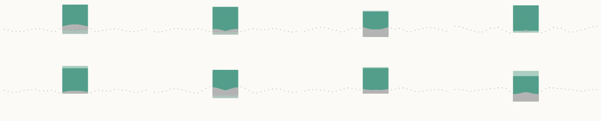
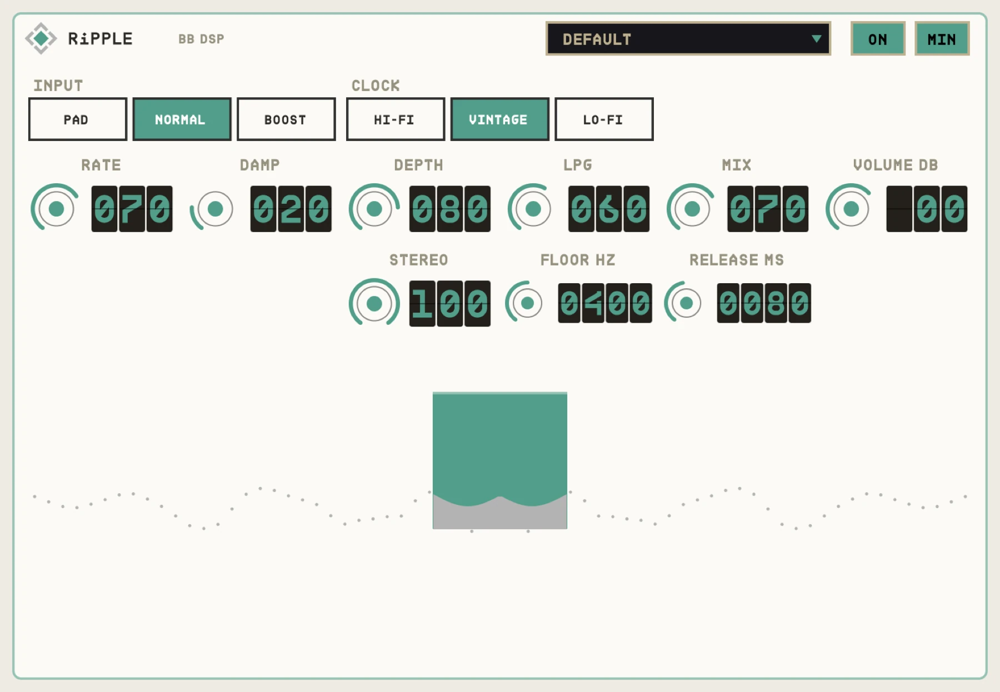

OVERVIEW
RiPPLE moves a short delay line with random steps at random times, smoothed so they flow. The result is a seasick, watery vibrato that never repeats. After it, a low-pass gate opens with your playing and closes as notes fade, so tails go dark and soft.


QUICK START
- 01Insert RiPPLE on guitar, keys or vocals.
- 02Set RATE for how often the pitch wanders and DAMP for how smoothly.
- 03DEPTH sets how far it bends.
- 04LPG sets how much the filter opens and closes with your playing.
HOW IT WORKS
Random, not an LFO
There is no repeating wave. Each move goes to a new random place.
Low-pass gate
Loud playing opens the filter; FLOOR sets how far it closes; RELEASE how fast.
CONTROLS
Values in the dark wells are the defaults.
MAIN
RATE0-100%
40
How often a new random step arrives (every 3 s up to every 15 ms).
DAMP0-100%
40
How smoothly the steps glide (3 ms to 1 s).
DEPTH0-100%
35
How far the pitch bends.
LPG0-100%
60
How strongly the low-pass gate follows your playing.
MIX0-100%
70
Dry against wet.
VOLUME-24 to +12 dB
0
Output level.
OPTIONS
INPUTPAD / NORMAL / BOOST
NORMAL
Input level into the circuit.
CLOCKHI-FI / VINTAGE / LO-FI
VINTAGE
Darkness of the delay line.
LPG FLOORHz
400
How far the filter closes.
LPG RELEASEms
80
How quickly it closes.
STEREO0-100%
25
Left and right wander apart.
TIPS
- Low RATE, high DAMP, MIX 100% gives slow, drunk tape drift.
- Fast RATE with low DAMP is a broken, fluttering vibrato.
SPECS
- TYPE
- Audio effect (AU aufx), VST3, Standalone
- OUTPUT
- Stereo